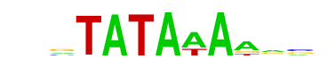

| p-value: | 1e-655 |
| log p-value: | -1.510e+03 |
| Information Content per bp: | 1.679 |
| Number of Target Sequences with motif | 974.0 |
| Percentage of Target Sequences with motif | 6.40% |
| Number of Background Sequences with motif | 185.6 |
| Percentage of Background Sequences with motif | 0.56% |
| Average Position of motif in Targets | 25.1 +/- 8.3bp |
| Average Position of motif in Background | 51.3 +/- 32.8bp |
| Strand Bias (log2 ratio + to - strand density) | 10.0 |
| Multiplicity (# of sites on avg that occur together) | 1.00 |
| Motif File: | file (matrix) reverse opposite |
| Rank | Match Score | Redundant Motif | P-value | log P-value | % of Targets | % of Background | Motif file |
| 1 | 0.975 |  | 1e-550 | -1268.562313 | 6.44% | 0.75% | motif file (matrix) |
| 2 | 0.937 | 1e-489 | -1127.577012 | 6.75% | 0.99% | motif file (matrix) | |
| 3 | 0.940 | 1e-421 | -971.238573 | 5.74% | 0.82% | motif file (matrix) | |
| 4 | 0.881 | 1e-372 | -856.597960 | 9.80% | 2.78% | motif file (matrix) | |
| 5 | 0.811 | 1e-85 | -195.849131 | 5.12% | 2.35% | motif file (matrix) | |
| 6 | 0.604 | 1e-31 | -72.289057 | 2.12% | 1.02% | motif file (matrix) | |
| 7 | 0.663 | 1e-26 | -60.819109 | 0.16% | 0.01% | motif file (matrix) |